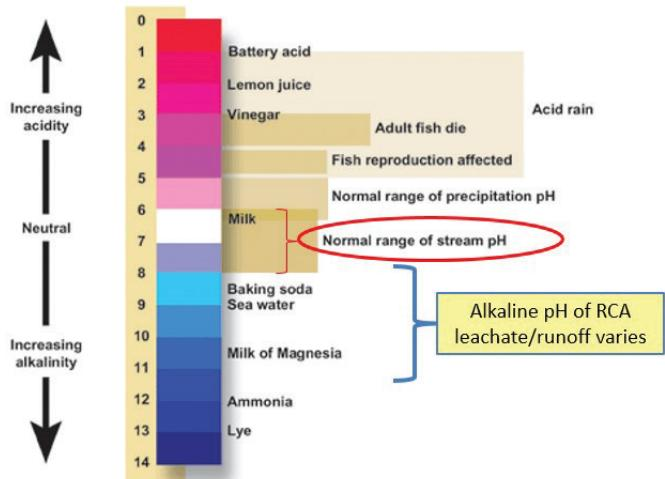

Concrete Recycling Environmental Benefits
Concrete recycling environmental benefits guide decisions on whether to incorporate recycled, coproduct, or waste materials instead of virgin aggregates in concrete pavement projects, weighing factors such as transport distance, emissions, landfill diversion and overall life‑cycle sustainability[1][3]. They aim to achieve the most sustainable end‑of‑life outcome by reclaiming end‑of‑life concrete, processing it on‑site into high‑grade recycled concrete aggregate (RCA) for uses such as base, subbase or backfill, while proactive preconstruction planning of recycling locations and site layout reduces potential air‑quality, water‑quality and community impacts[1][3]. The approach requires that durability be ensured, local sourcing maximized to cut haul distances and emissions, and best‑management practices applied to control noise, dust and alkaline runoff, with agency specifications and stakeholder engagement shaping the decision whether to mandate or allow market‑driven RCA use[1][3][4].
Sources (4)
Purpose and decision context
Concrete recycling environmental benefits are meant to guide the decision of whether to incorporate recycled, coproduct, or waste materials instead of virgin aggregates in a concrete pavement project, weighing factors such as transport distance, emissions, landfill diversion and overall life‑cycle sustainability. The guides apply this concept to support practitioners’ “determining whether concrete recycling is an appropriate option for a given project” and to aid agencies in the “The decision to mandate or specify RCA for certain uses should be weighed against the approach of allowing the contractor (market) to determine the most efficient use(s) of RCA.” It also emphasizes “Proactive preconstruction decisions regarding the location(s) and site layout of recycling operations” that “can be used to reduce negative impacts to air quality, water quality, and the local community.” [1][3]
[1] — Ch. 2 (pp. 36–37); [3] — Ch. 1 (p. 16), Ch. 3 (p. 38), Ch. 7 (pp. 69–83)
The guides identify multiple interrelated problems that concrete recycling seeks to resolve. Concrete recycling addresses the problem of excessive environmental impact caused by extracting virgin aggregates and transporting materials over long distances. At the same time, the primary problem addressed by concrete‑recycling environmental benefits is the risk that recycling activities could degrade air and water quality, generate noise and dust, or otherwise disturb nearby communities. To meet these challenges, the need is to lower emissions, reduce waste sent to landfills, and cut costs while maintaining pavement durability. Accordingly, the performance goal is to achieve the most sustainable end‑of‑life outcome—recycling or reusing concrete at the highest possible grade—while keeping secondary impacts comparable to, or lower than, those of virgin‑aggregate production through proactive site planning, process controls, and best‑management practices. [1][3][4]
[1] — Ch. 2 (pp. 36–37); [3] — Ch. 1 (p. 16), Ch. 3 (p. 38), Ch. 5 (p. 58), Ch. 7 (pp. 69–83); [4] — Ch. 5 (p. 48), Ch. 6 (p. 61)
Scope and applicability
Concrete recycling is appropriate for pavement and other transportation infrastructure projects—such as highway or other concrete‑pavement assets—where the existing concrete has reached end‑of‑life or would otherwise generate demolition waste. In these project types the material can be reclaimed, processed on‑site, and reused as high‑grade recycled concrete aggregate (RCA) for base, subbase, backfill, soil stabilization, pipe bedding, or other engineered applications. The practice is most suitable when it is driven by the client and incorporated early in the project, being considered during scoping and design phases so that recycling locations, site layout, specifications, and best‑management practices can be planned. Using locally sourced RCA minimizes haul distances, cuts transportation emissions, and avoids importing distant materials, thereby enhancing overall sustainability across the life cycle. [1][3]
The following figure illustrates a concrete recycling operation set up inside of Edens Expressway cloverleaf interchange.
 Concrete recycling operation set up inside of Edens Expressway cloverleaf interchange [3]
Concrete recycling operation set up inside of Edens Expressway cloverleaf interchange [3]
The image displays a large-scale concrete crushing plant situated within the grassy area of a highway interchange, surrounded by piles of excavated earth and construction debris.
[1] — Ch. 2 (pp. 36–37); [3] — Ch. 3 (p. 38), Ch. 7 (pp. 69–83)
Concrete recycling should be avoided when several conditions undermine its environmental advantage. Long haul distances make recycled concrete aggregate (RCA) counter‑productive: “But it may actually be environmentally damaging if a project requires the use of RCA at some set percentage to meet a ‘sustainability’ goal, yet the nearest supply is located a great distance away requiring the need to ship it by truck,” and “The energy consumed and emissions generated by the trucks can easily overcome any advantage of using the RCA compared to a suitable locally available material.” Likewise, “if the recycled aggregate cannot meet durability requirements and would cause premature pavement failure, its life‑cycle impacts become negative.” Recycling is also unsuitable when project planning does not embed it early or when specifications rigidly force RCA use without flexibility; in such cases “Recycling is most effective when it is driven by the client and considered from the start of the project,” and “The decision to mandate or specify RCA for certain uses should be weighed against the approach of allowing the contractor (market) to determine the most efficient use(s) of RCA.” The presence of highly alkaline runoff further limits placement: “Water passing over and percolating through RCA materials can produce runoff and effluent that is initially highly alkaline, often with pH values of 11 or 12,” and “Consideration of the sensitivity of local soils, surface waters, and groundwater to the presence of alkaline effluent may necessitate setting limits on the proximity of RCA placement to sensitive areas.” Noise and dust concerns also dictate avoidance when mitigation cannot protect nearby receptors: “Another potential negative impact of concrete recycling is the noise and dust produced by the concrete breaking, hauling, and crushing operations, particularly for offsite crushing.” Finally, contaminated demolition debris makes recycling inappropriate; “Concrete from building and demolition debris can include contaminants that could be problematic (e.g., asbestos),” and “Chemicals, metals, sealants, and other materials present in highway concrete used for recycling could also become pollutants,” so using known sources “by using concrete from known sources, such as existing agency infrastructure, contaminants can likely be reduced.” When these factors are present, selecting locally sourced virgin aggregate or allowing market‑driven allocation of RCA yields a more sustainable outcome. [1][3]
The figure below illustrates the typical pH range of recycled concrete aggregate leachate to contextualize the alkaline runoff concerns discussed above.

A pH scale illustrating the typical alkaline range of recycled concrete aggregate (RCA) leachate and runoff compared to common liquids and natural water bodies. [3]The diagram highlights that this high-pH runoff can exceed the normal range of stream pH, visually demonstrating the potential for environmental impact on receiving waters and vegetation. By comparing the alkalinity of RCA runoff to substances like baking soda and milk, the figure provides a visual reference for understanding the chemical nature of the effluent that must be managed during concrete recycling.
[1] — Ch. 2 (pp. 36–37); [3] — Ch. 3 (p. 38), Ch. 5 (p. 58), Ch. 7 (p. 70)
Information needs
The assessment of concrete‑recycling environmental benefits requires a suite of site‑specific and project‑level data. Planners must obtain quantitative information on the local supply of reclaimed concrete aggregates, including the exact demolition source, to verify material quality and limit contaminants such as chemicals or sealants. Transportation metrics—average haul distances, mode of travel, and round‑trip routes for both incoming waste and outbound recycled aggregate—are needed because they directly affect fuel use, emissions, traffic impacts, and overall cost. Condition data covering expected durability of the reclaimed material and life‑cycle assessment inputs (e.g., allocation of environmental burdens among co‑products) are essential to avoid premature failure and to quantify net sustainability gains. Environmental controls require baseline water‑quality parameters (pH of potential runoff), soil sensitivity, proximity limits to surface‑water or groundwater receptors, and baseline air‑quality metrics; these support setting limits on placement distances and designing dust‑ and noise‑mitigation measures such as mobile crushing units, suppression systems, or operation‑hour restrictions. Project specifications must embed agency‑defined objectives for cost, sustainability, and quality, and the early scoping process should engage all key stakeholders—including client leadership—to reach agreement on how environmental burdens are shared and to select appropriate recycled‑concrete applications. [1][3][4]
[1] — Ch. 2 (pp. 36–37); [3] — Ch. 3 (p. 38), Ch. 5 (p. 58), Ch. 7 (pp. 70–77); [4] — Ch. 5 (p. 48)
Alternatives
The feasible alternatives that should be compared when assessing concrete‑recycling environmental benefits fall into two dimensions: material supply origin and intended reuse pathway.
For supply origin, practitioners are advised to evaluate (a) locally sourced recycled concrete aggregate or other recycled construction waste materials (RCWMs), (b) recycled concrete that must be hauled from a distant source, and (c) conventional virgin aggregates available nearby. The analysis must consider transportation mode and distance, fuel use and emissions, cost savings from reduced material movement, and any durability implications for the new pavement. A life‑cycle perspective is required to ensure that energy and emission penalties of long‑haul trucking do not outweigh recycling advantages; thresholds should be set where the net environmental gain becomes negative.
“Maximizing the use of local materials and/or recycled, coproduct, or waste materials (RCWMs) reduces the amount of material that has to be transported, saving money and reducing emissions.”
In addition, the source’s contamination profile should be compared: using concrete from known, agency‑owned sources versus material derived broadly from building‑and‑demolition debris that may contain contaminants such as asbestos or chemicals. “by using concrete from known sources, such as existing agency infrastructure, contaminants can likely be reduced”; the latter carries a higher risk of pollutant introduction.
“But it may actually be environmentally damaging if a project requires the use of RCA at some set percentage to meet a “sustainability” goal, yet the nearest supply is located a great distance away requiring the need to ship it by truck.”
Finally, the principal reuse pathways for recycled concrete aggregate (RCA) should be examined, including backfill, bound or unbound base layers, substitution as a concrete aggregate, soil‑stabilization applications, and pipe‑bedding installations. Each pathway can be assessed against criteria such as required BMPs, design‑stage controls, haul distances, and residual environmental constraints. [1][3]
The figure below illustrates a practical application of these reuse pathways through an airfield pavement layout at Hartsfield-Jackson Atlanta Airport.
 Airfield pavement layout at Hartsfield-Jackson Atlanta Airport showing features with RCA base [3]
Airfield pavement layout at Hartsfield-Jackson Atlanta Airport showing features with RCA base [3]
The figure displays a schematic map of the airfield infrastructure, identifying specific runways and taxiways that utilize recycled concrete aggregate (RCA) as indicated by shaded regions.
[1] — Ch. 2 (pp. 36–37); [3] — Ch. 7 (pp. 70–83)
Decision criteria
The decision to employ recycled concrete should be governed foremost by sustainability—maximizing the use of local or recycled materials to cut transport energy and emissions and to achieve measurable environmental benefits. Durability is a necessary condition because premature failure would erode those gains, so it must be ensured alongside the sustainability goal. Cost considerations are relevant but only insofar as they support sustainable outcomes; they remain secondary to achieving durable, low‑impact pavement. Other factors such as safety, performance, schedule, accessibility, or public impact are not primary drivers for the recycling decision. [1][3]
[1] — Ch. 2 (pp. 36–37); [3] — Ch. 3 (p. 38), Ch. 7 (pp. 82–83)
Weighting environmental criteria for concrete recycling begins with ensuring durability, because premature failure erases any other advantage – “the durability of the concrete is extremely important to avoid premature failure.” Next, priority is given to using locally sourced recycled or coproduct material; “Maximizing the use of local materials and/or recycled, coproduct, or waste materials (RCWMs) reduces the amount of material that has to be transported, saving money and reducing emissions.” Material selection must be context‑sensitive, as “Materials choices are context sensitive and thus must be considered broadly to enhance sustainability over the life cycle.”
Project initiation should be client‑driven: “Recycling is most effective when it is driven by the client and considered from the start of the project.” Agency specifications need to align with core objectives—cost, sustainability, quality—and provide guidance on allowable uses: “Agencies should provide guidance for allowable and desirable uses of RCA, as well as specifications that reflect agency objectives (cost, sustainability, quality, etc.).” The weighting process balances any mandate for recycled concrete against a market‑driven approach: “The decision to mandate or specify RCA for certain uses should be weighed against the approach of allowing the contractor (market) to determine the most efficient use(s) of RCA.” Finally, stakeholder engagement is essential to capture environmental gains without compromising budget or performance: “To maximize the benefits of recycling, project scoping and selection should engage all key project stakeholders.” [1][3]
[1] — Ch. 2 (pp. 36–37); [3] — Ch. 3 (p. 38)
Analysis methods and tools
The guidance relies on life‑cycle assessment (LCA) to evaluate the environmental impacts of using recycled, coproduct or waste materials, allocating burdens such as production emissions and transport energy across the material’s life cycle. It emphasizes that these assessments must be done on a project‑by‑project basis, weighing factors like local availability and haul distance to avoid unintended sustainability penalties. No other specific tools—such as condition ratings, decision trees, life‑cycle cost analysis, risk assessment, or benefit‑cost analysis—are mentioned in the excerpt. [1]
[1] — Ch. 2 (pp. 36–37)
The projected environmental benefits of concrete recycling hinge on several core assumptions that must be made explicit in any analysis. First, it is assumed that the material is correctly classified as recycled, a coproduct or waste and that its production burdens are allocated according to an agreed‑upon methodology. A further assumption is that the aggregate can be sourced locally so that transport energy does not outweigh the savings; analysts therefore need to define transport modes, distances, and life‑cycle boundaries up front. The analysis also presumes that most recycled concrete originates from known, low‑contamination sources, allowing any contaminants to be minimized through careful sourcing. Water that percolates through recycled‑concrete aggregate is assumed to become highly alkaline but to pose little environmental risk because the high‑pH effluent is expected to dilute rapidly after discharge. Finally, it is taken for granted that runoff pollutants are primarily generated by vehicle traffic rather than the concrete itself, supporting the use of pervious concrete in low‑traffic settings.
Uncertainties arise at each step. Market‑driven reclassification of materials (e.g., fly ash shifting between waste and coproduct status) can alter allocation outcomes. Actual haul distances are project‑specific; if trucks travel farther than anticipated, the emissions savings may be erased. The performance of recycled aggregate in new pavements is context‑sensitive, making it difficult to generalize life‑cycle benefits without site‑specific testing. Water‑quality impacts remain uncertain because research has not reached consensus on the nature and extent of leachate from recycled‑concrete stockpiles; pH values start high (9–12) and diminish over weeks, creating variability in predictions. Sensitivity of local soils, surface waters, and groundwater to alkaline runoff may require additional monitoring or setback limits. Operational noise and dust generated during breaking, hauling, and crushing also introduce variability into the net environmental benefit calculation, even when mitigation measures are employed. [1][3][4]
[1] — Ch. 2 (pp. 36–37); [3] — Ch. 5 (p. 58), Ch. 7 (p. 70); [4] — Ch. 6 (p. 61)
Stakeholders and constraints
“The decision‑making loop for concrete‑recycling benefits rests with the practitioners identified in the manual – agency staff, consultants and contractors.” These practitioners supply project information and technical input to evaluate recycling suitability, select appropriate RCA applications, and define inspection criteria. “Input on concrete‑recycling benefits must come from all key project stakeholders, with the agency (the client/owner) taking the lead in providing guidance and specifications that reflect its cost, sustainability and quality objectives.” Accordingly, “The owner‑agency is responsible for deciding whether to mandate or specify recycled concrete aggregate (RCA) for particular uses,” while the same practitioners “they also carry out the final approval of the recycling approach for a given project.” [3]
[3] — Ch. 1 (p. 16), Ch. 3 (p. 38)
The choice to employ recycled concrete aggregate (RCA) is governed by agency‑issued specifications, material requirement documents, and contractual frameworks that must align with agency objectives such as cost, sustainability, and quality. These instruments may either mandate RCA for specific applications or permit market‑driven selection, so project scoping must weigh a “decision to mandate or specify RCA for certain uses” against allowing the contractor to determine the most efficient use(s). Design requirements further constrain placement by requiring setbacks from “the sensitivity of local soils, surface waters, and groundwater to the presence of alkaline effluent,” limiting proximity to sensitive media. Water and air quality regulations impose permissible levels of runoff and emissions, obligating compliance with “water and air quality regulations” and the implementation of dust‑and‑noise controls such as mobile crushing units, site selection, suppression systems, and operation‑hour restrictions. Agencies often restrict RCA sources to material derived from their own infrastructure and require adherence to existing best‑management practices (BMPs) and engineered design controls, noting that “Existing BMPs and readily implementable design and construction controls have been shown to be effective in preventing adverse environmental impacts of use of RCA.” Finally, the functional classification of pervious concrete—commonly used with recycled material—is limited by design criteria to “currently applicable for low traffic volume pavements, parking areas, and shoulders,” which serves as an additional design constraint. [3][4]
[3] — Ch. 3 (p. 38), Ch. 5 (p. 58), Ch. 7 (pp. 76–83); [4] — Ch. 6 (p. 61)
Timing and implementation
The decision to pursue concrete‑recycling benefits should be made at the very beginning of a project, during the initial scoping and selection phase. It must be driven by the client and built into specifications and contract language before design or construction proceeds, ensuring that cost, sustainability, quality and allowable uses are evaluated up front. The decision about how concrete recycling will deliver environmental benefits must be taken proactively during the preconstruction phase, before any on‑site work begins. Proactive preconstruction decisions regarding the location(s) and site layout of recycling operations can be used to reduce negative impacts to air quality, water quality, and the local community. [3]
[3] — Ch. 3 (p. 38), Ch. 7 (pp. 76–77)
The guides state that action is triggered when a material that has been treated as waste gains enough value—such as fly ash becoming scarce—to be re‑classified as a coproduct; “If the material has value beyond this, it is no longer considered a waste, but instead a coproduct.” At that point “When this occurs, some of the environmental burden of the originating process—the burning of coal to produce electricity—will be allocated to the fly ash and thus be borne by the concrete,” requiring a reassessment of the recycling strategy. A second trigger is reached when haul distances for recycled concrete or RCA become large enough that fuel use and emissions outweigh the benefits of avoiding virgin material, prompting a revision of the plan. Environmental monitoring adds further thresholds: alkaline runoff with “pH values of 11 or 12” near sensitive soils or water bodies initiates placement‑proximity limits, and any noise or dust exceedance activates controls such as mobile crushing units, dust‑suppression equipment, or “operation hour restrictions.” [1][3]
[1] — Ch. 2 (pp. 36–37); [3] — Ch. 5 (p. 58)
The selected recycling option requires allocating resources for early site planning—identifying suitable locations, designing the recycling‑operation layout, and procuring conventional process‑control equipment and operational procedures that support waste‑material reuse. These resources are mobilized during a proactive preconstruction phase so that location and layout decisions and control measures are in place before construction activities begin, ensuring compliance with air‑ and water‑quality standards while minimizing community impacts. [3]
The following figure illustrates a well-implemented on-site material crushing program in an urban area.
 On-site concrete crushing operation under an urban overpass. [3]
On-site concrete crushing operation under an urban overpass. [3]
The image displays a large pile of broken concrete rubble situated directly beneath the support columns of a highway structure, indicating an active demolition or recycling site within an urban environment. A black silt fence runs along the perimeter of the debris pile to separate the construction zone from adjacent grassy areas, serving as a control measure for dust and runoff.
[3] — Ch. 7 (pp. 76–77)
Outcomes and follow-up
Success is realized when a project incorporates the greatest feasible share of locally sourced recycled concrete aggregate or other RCWMs such that total material transport distance and associated emissions are lower than they would be using virgin materials, while also diverting waste from landfills; simultaneously, concrete recycling must deliver its promised environmental benefits without any detectable adverse effects on water or air quality, noise, dust, or local communities. This outcome is achieved by consistently applying established BMPs and design‑construction controls, sourcing recycled concrete aggregate from the agency’s own infrastructure to limit impact, and employing proven beneficial reuse options such as backfill or base layers. Success is measured by tracking the proportion of RCWM used, the average haul distance, and quantifying the resulting CO2‑equivalent emissions through life‑cycle or emission accounting to confirm a net environmental benefit, together with documented compliance with BMPs, routine environmental monitoring that confirms no negative impacts, and field‑study records showing sustainable performance on highway projects. [1][3]
[1] — Ch. 2 (pp. 36–37); [3] — Ch. 7 (pp. 82–83)
To ensure that concrete‑recycling benefits are captured for future use, agencies should record the environmental outcomes during project scoping and then publicize those results so they can be referenced in later decisions; engaging all key stakeholders early helps define specifications and contractual flexibility that reflect cost, sustainability and quality goals, allowing the most efficient RCA applications to be chosen based on documented performance. [3]
[3] — Ch. 3 (p. 38)
References
- Integrated Materials and Construction Practices for Concrete Pavement: A State-of-the-Practice Manual (2nd edition IMCP Manual, 2019) [link]
- Guide to Cement-Based Integrated Pavement Solutions (2011) [link]
- Recycling Concrete Pavement Materials: A Practitioner’s Reference Guide (2018) [link]
- Sustainable Concrete Pavements: A Manual of Practice (2012) [link]